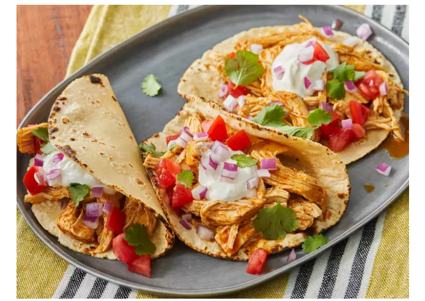

Slow Cooker Chicken Tacos

Description
These easy slow cooker chicken tacos are easy to make with just 3 ingredients in your crockpot.
Spoon the filling into warm tortillas for a very tasty meal any day of the week.
Ingredients
These are the three simple ingredients you'll need to make these slow cooker chicken tacos:
- Broth: Start with a cup of chicken broth (store-bought or homemade).
- Taco seasoning: Use store-bought taco seasoning or make your own at home.
- Chicken: A pound of skinless, boneless chicken breasts should make eight servings.
Steps
- Gather all ingredients.
- Combine chicken broth and taco seasoning mix in a bowl.
- Place chicken in a slow cooker. Pour chicken broth mixture over chicken.
- Cook on Low for 6 to 8 hours. Shred chicken.